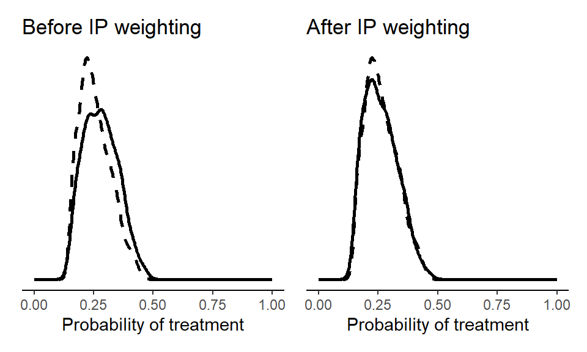
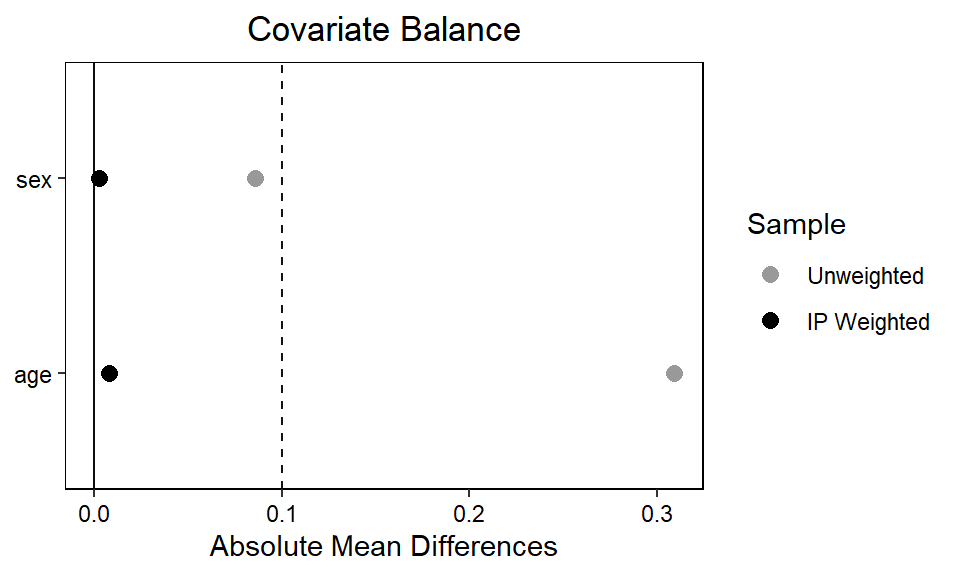

Chapter 4 Adventures in G-methods
4.1 Doubly robust estimation
For demonstrating a ‘doubly robust’ estimator that combines IPW and g-computation, we use the nhefs data from the causaldata package (Huntington-Klein and Barrett 2021). This data come from the National Health and Nutrition Examination Survey Data I Epidemiologic Follow-up Study.
We first calculate stabilized IP weights.
treat_mod <- glm(qsmk ~ sex + age,
data = d,
family = "binomial")
d$pX <- predict(treat_mod, type = "response")
pn <- glm(qsmk ~ 1,
data = d,
family = "binomial")
d$pnX <- predict(pn, type = "response")
d$sw <- with(d, ifelse(qsmk==1, pnX/pX, (1-pnX)/(1-pX)))We can then plot the sample before and after weighting.
library(ggplot2)
library(patchwork)
p1 <- ggplot() +
# X = 1 (sample)
geom_density(data = subset(d, qsmk == 1),
aes(x = pX), size = 1) +
# X = 0 (sample)
geom_density(data = subset(d, qsmk == 0),
aes(x = pX), linetype = "dashed", size = 1) +
theme_classic() +
theme(
axis.text.y = element_blank(),
axis.ticks.y = element_blank(),
axis.title.y = element_blank(),
axis.line.y = element_blank()) +
xlim(c(0,1)) + xlab("Probability of treatment") +
ggtitle("Before IP weighting")
p2 <- ggplot() +
# X = 1 (pseudo-population)
geom_density(data = subset(d, qsmk == 1),
aes(x = pX, weight = sw), size = 1) +
# X = 0 (pseudo-population)
geom_density(data = subset(d, qsmk == 0),
aes(x = pX, weight = sw), linetype = "dashed", size = 1) +
theme_classic() +
theme(
axis.text.y = element_blank(),
axis.ticks.y = element_blank(),
axis.title.y = element_blank(),
axis.line.y = element_blank()) +
xlim(c(0,1)) + xlab("Probability of treatment") +
ggtitle("After IP weighting")
(p1 + p2)
We can also make a ‘love plot’ using the cobalt package (Greifer 2024) to inspect whether the IP weights ensures acceptable balance on the level of individual covariates. By setting continuous = "std", we indicate that the function should return the standardized absolute mean difference for any continuous variables (here, age). If we wanted the raw absolute mean difference, we’d set continuous = "raw".
library(cobalt)
love.plot(treat_mod, abs = TRUE,
sample.names = c("Unweighted", "IP Weighted"),
weights = d$sw,
colors = c("grey60", "black"),
thresholds = c(m = .1))
bal.tab(treat_mod, abs = TRUE, un = TRUE, thresholds = c(m = .1), weights = d$sw, continuous = "std")$BalanceFinally, we include the stabilized weights in an outcome model, which we in turn use for g-computation.
out_mod <- lm(wt82_71 ~ qsmk + sex + age, data = d, weights = sw)
EX1 <- predict(out_mod,
newdata = transform(d, qsmk = 1))
EX0 <- predict(out_mod,
newdata = transform(d, qsmk = 0))
mean(EX1)-mean(EX0)## [1] 3.0392864.1.1 Bootstrapping
The basic approach to bootstrapping is similar as in the previous chapter. Here, we bootstrap the doubly robust estimator from above. We use only 100 bootstrap samples, but in practice we’d often want more.
library(boot)
# Number of bootstrap samples
n_bootstrap <- 100
bootstrap_analysis <- function(data, indices) {
# Resample the data
d <- data[indices, ]
# IPW
treat_mod <- glm(qsmk ~ sex + age,
data = d,
family = "binomial")
d$pX <- predict(treat_mod, type = "response")
pn <- glm(qsmk ~ 1,
data = d,
family = "binomial")
d$pnX <- predict(pn, type = "response")
d$sw <- with(d, ifelse(qsmk==1, pnX/pX, (1-pnX)/(1-pX)))
# G-computation with IP weighted outcome model
out_mod <- lm(wt82_71 ~ qsmk + sex + age, data = d, weights = sw)
EX1 <- predict(out_mod,
newdata = transform(d, qsmk = 1))
EX0 <- predict(out_mod,
newdata = transform(d, qsmk = 0))
mean(EX1)-mean(EX0)
# Return the coefficient of X
return(mean(EX1)-mean(EX0))
}
# Perform bootstrapping
bootstrap_results <- boot(data = d,
statistic = bootstrap_analysis,
R = n_bootstrap)
# Summarize the bootstrap results
bootstrap_summary <- boot.ci(bootstrap_results, type = "norm")
# Print the results
print(bootstrap_summary)## BOOTSTRAP CONFIDENCE INTERVAL CALCULATIONS
## Based on 100 bootstrap replicates
##
## CALL :
## boot.ci(boot.out = bootstrap_results, type = "norm")
##
## Intervals :
## Level Normal
## 95% ( 2.185, 3.960 )
## Calculations and Intervals on Original Scale4.1.2 More covariates
We can try the same analysis but with a more comprehensive set of covariates.
library(boot)
bootstrap_analysis <- function(data, indices) {
# Resample the data
d <- data[indices, ]
# IPW
# see: https://remlapmot.github.io/cibookex-r/ip-weighting-and-marginal-structural-models.html
treat_mod <- glm(qsmk ~ sex + race + age + I(age ^ 2) +
as.factor(education) + smokeintensity +
I(smokeintensity ^ 2) + smokeyrs + I(smokeyrs ^ 2) +
as.factor(exercise) + as.factor(active) + wt71 + I(wt71 ^ 2),
data = d,
family = "binomial")
d$pX <- predict(treat_mod, type = "response")
pn <- glm(qsmk ~ 1,
data = d,
family = "binomial")
d$pnX <- predict(pn, type = "response")
d$sw <- with(d, ifelse(qsmk==1, pnX/pX, (1-pnX)/(1-pX)))
# G-computation with IP weighted outcome model
out_mod <- lm(wt82_71 ~ qsmk + sex + race + age + I(age ^ 2) +
as.factor(education) + smokeintensity +
I(smokeintensity ^ 2) + smokeyrs + I(smokeyrs ^ 2) +
as.factor(exercise) + as.factor(active) + wt71 + I(wt71 ^ 2),
data = d, weights = sw)
EX1 <- predict(out_mod,
newdata = transform(d, qsmk = 1))
EX0 <- predict(out_mod,
newdata = transform(d, qsmk = 0))
mean(EX1)-mean(EX0)
# Return the coefficient of X
return(mean(EX1)-mean(EX0))
}
# Perform bootstrapping
bootstrap_results <- boot(data = d,
statistic = bootstrap_analysis,
R = n_bootstrap)
# Summarize the bootstrap results
bootstrap_summary <- boot.ci(bootstrap_results, type = "norm")
# Print the results
print(bootstrap_summary)## BOOTSTRAP CONFIDENCE INTERVAL CALCULATIONS
## Based on 100 bootstrap replicates
##
## CALL :
## boot.ci(boot.out = bootstrap_results, type = "norm")
##
## Intervals :
## Level Normal
## 95% ( 2.529, 4.341 )
## Calculations and Intervals on Original ScaleThe overall inference is the same, although the more comprehensive adjustment set yields a slightly higher point estimate (around 3.5 kg), indicating that quitters gain even more weight than previously estimated.
4.2 Bootstrapped sub-group analysis
bootstrap_analysis <- function(data, indices) {
# Resample the data
d <- data[indices, ]
# IPW
pn_sub <- glm(qsmk ~ 1 + sex, data = d, family = "binomial")
d$pnX <- predict(pn_sub, type = "response")
d$sw <- with(d, ifelse(qsmk == 1, pnX / pX, (1 - pnX) / (1 - pX)))
# G-computation with IP weighted outcome model
out_mod <- glm(wt82_71 ~ qsmk + sex + age + qsmk * sex, data = d, weights = sw)
EX1S1 <- predict(out_mod, newdata = transform(d, qsmk = 1, sex = as.factor(1)))
EX1S0 <- predict(out_mod, newdata = transform(d, qsmk = 1, sex = as.factor(0)))
EX0S1 <- predict(out_mod, newdata = transform(d, qsmk = 0, sex = as.factor(1)))
EX0S0 <- predict(out_mod, newdata = transform(d, qsmk = 0, sex = as.factor(0)))
mean_diff_S1 <- mean(EX1S1) - mean(EX0S1)
mean_diff_S0 <- mean(EX1S0) - mean(EX0S0)
return(c(mean_diff_S1, mean_diff_S0))
}
# Perform bootstrapping
bootstrap_results <- boot(data = d, statistic = bootstrap_analysis, R = n_bootstrap)
# Extract and display results
boot.ci(bootstrap_results, type = "norm", index = 1) # For females## BOOTSTRAP CONFIDENCE INTERVAL CALCULATIONS
## Based on 100 bootstrap replicates
##
## CALL :
## boot.ci(boot.out = bootstrap_results, type = "norm", index = 1)
##
## Intervals :
## Level Normal
## 95% ( 1.297, 4.174 )
## Calculations and Intervals on Original Scale## BOOTSTRAP CONFIDENCE INTERVAL CALCULATIONS
## Based on 100 bootstrap replicates
##
## CALL :
## boot.ci(boot.out = bootstrap_results, type = "norm", index = 2)
##
## Intervals :
## Level Normal
## 95% ( 2.322, 4.643 )
## Calculations and Intervals on Original Scale4.3 Complex longitudinal exposure-outcome feedback
In the book, we show a complicated DAG adapted from VanderWeele, Jackson, and Li (2016) of a complex longitudinal exposure-outcome feedback setting. Here, we verify that the adjustment strategy suggested in the book holds true in a simulated setting. To keep things simple, we set all effects to be recovered to 1.
First, we simulate some data consistent with the complex DAG.
# Seed for reproducibility
set.seed(42)
# Define sample size
n <- 1000
# Define variables
C <- rnorm(n)
Z1 <- rnorm(n, C) + rnorm(n)
Z2 <- rnorm(n, Z1) + rnorm(n)
Z3 <- rnorm(n, Z2) + rnorm(n)
X1 <- rnorm(n, C) + rnorm(n)
X2 <- rnorm(n, X1 + Z1) + rnorm(n)
X3 <- rnorm(n, X2 + Z2) + rnorm(n)
Y <- rnorm(n, X1 + X2 + X3 + Z3) + rnorm(n)Next, we fit a model for each measurement time point, and we see that all three models pick up the simulated effect of (roughly) 1.
# Model for E[Y | X1, X2, Z1] to estimate effect of X1 on Y
model_X1 <- lm(Y ~ X1 + X2 + Z1)
coef(model_X1)[["X1"]][1] 0.9999557
# Model for E[Y | X1, X2, X3, Z1] to estimate effect of X2 on Y
model_X2 <- lm(Y ~ X1 + X2 + X3 + Z1 + Z2)
coef(model_X2)[["X2"]][1] 0.9896064
# Model for E[Y | X2, X3, Z2] to estimate effect of X3 on Y
model_X3 <- lm(Y ~ X2 + X3 + Z2)
coef(model_X3)[["X3"]][1] 1.02467
4.4 Marginal mediation
Let’s show a more general but still basic implementation of mediation analysis using g-computation to handle nonlinearities. Given that we’re interested in decomposing the effect of \(X\) on \(Y\) with a single mediator \(M\), in nonlinear settings we need to average over \(M\) (and any covariate) to obtain a population-averaged effect.
set.seed(42)
n <- 1e5
X <- rbinom(n, 1, 0.5)
M <- rnorm(n, 1.5 * X) # continuous M
Y <- rbinom(n, 1, plogis(-2 + 1.0 * X + 0.5 * M)) # binary Y
d <- data.frame(X = X, M = M, Y = Y)
m_mod <- lm(M ~ X, data = d)
y_mod <- glm(Y ~ X + M, data = d, family = binomial)
gcomp <- function(m_fit, y_fit, n_mc = 1e5) {
a <- coef(m_fit)
sig <- sigma(m_fit)
M0 <- rnorm(n_mc, a[1], sig) # M under X = 0
M1 <- rnorm(n_mc, a[1] + a[2], sig) # M under X = 1
yX1MX1 <- mean(predict(y_fit, data.frame(X = 1, M = M1), type = "response"))
yX1MX0 <- mean(predict(y_fit, data.frame(X = 1, M = M0), type = "response"))
yX0MX0 <- mean(predict(y_fit, data.frame(X = 0, M = M0), type = "response"))
c(TIE = yX1MX1 - yX1MX0, PDE = yX1MX0 - yX0MX0, TE = yX1MX1 - yX0MX0)
}
set.seed(1)
(est <- gcomp(m_mod, y_mod))## TIE PDE TE
## 0.1603234 0.1546728 0.3149962The key step is simulating from the counterfactual mediator distributions – what \(M\) would look like under \(X = 0\) and \(X = 1\) – using the fitted mediator model. We then predict \(Y\) for each combination of fixed \(X\) and counterfactual \(M\), and average over those predictions.
The three quantities map to the standard decomposition TE = TIE + PDE: the TIE (total indirect effect) fixes \(X = 1\) and asks how much of the effect is explained by the shift in \(M\); the PDE (pure direct effect) holds \(M\) at its \(X = 0\) distribution and shifts \(X\); and the TE (total effect) is their sum. For valid confidence intervals, the whole gcomp call should be bootstrapped.
To verify, we can compute the “truth” directly from the simulation parameters.
set.seed(2)
N <- 1e5
M0_true <- rnorm(N, 0, 1) # true M under X = 0
M1_true <- rnorm(N, 1.5, 1) # true M under X = 1
truth <- c(
TIE = mean(plogis(-2 + 1 + 0.5 * M1_true)) - mean(plogis(-2 + 1 + 0.5 * M0_true)),
PDE = mean(plogis(-2 + 1 + 0.5 * M0_true)) - mean(plogis(-2 + 0.5 * M0_true)),
TE = mean(plogis(-2 + 1 + 0.5 * M1_true)) - mean(plogis(-2 + 0.5 * M0_true))
)
round(rbind(truth = truth, estimate = est), 4)## TIE PDE TE
## truth 0.1617 0.1506 0.3122
## estimate 0.1603 0.1547 0.3150The estimates match within simulation variance.
4.5 Session info
## R version 4.4.1 (2024-06-14)
## Platform: x86_64-pc-linux-gnu
## Running under: Rocky Linux 8.10 (Green Obsidian)
##
## Matrix products: default
## BLAS/LAPACK: /usr/lib64/libopenblasp-r0.3.15.so; LAPACK version 3.9.0
##
## locale:
## [1] LC_CTYPE=en_US.UTF-8 LC_NUMERIC=C
## [3] LC_TIME=en_US.UTF-8 LC_COLLATE=en_US.UTF-8
## [5] LC_MONETARY=en_US.UTF-8 LC_MESSAGES=en_US.UTF-8
## [7] LC_PAPER=en_US.UTF-8 LC_NAME=C
## [9] LC_ADDRESS=C LC_TELEPHONE=C
## [11] LC_MEASUREMENT=en_US.UTF-8 LC_IDENTIFICATION=C
##
## time zone: Europe/Copenhagen
## tzcode source: system (glibc)
##
## attached base packages:
## [1] stats graphics grDevices utils datasets methods base
##
## other attached packages:
## [1] cobalt_4.5.5 patchwork_1.2.0 ggplot2_3.5.1 causaldata_0.1.3
##
## loaded via a namespace (and not attached):
## [1] gtable_0.3.6 jsonlite_2.0.0 dplyr_1.1.4 compiler_4.4.1
## [5] highr_0.11 crayon_1.5.3 tidyselect_1.2.1 jquerylib_0.1.4
## [9] scales_1.4.0 yaml_2.3.10 fastmap_1.2.0 R6_2.6.1
## [13] labeling_0.4.3 generics_0.1.4 knitr_1.48 backports_1.5.0
## [17] tibble_3.3.0 bookdown_0.40 chk_0.9.2 bslib_0.8.0
## [21] pillar_1.11.1 RColorBrewer_1.1-3 rlang_1.1.6 cachem_1.1.0
## [25] xfun_0.46 sass_0.4.9 cli_3.6.5 withr_3.0.2
## [29] magrittr_2.0.4 digest_0.6.37 grid_4.4.1 rstudioapi_0.17.1
## [33] lifecycle_1.0.4 vctrs_0.6.5 evaluate_0.24.0 glue_1.8.0
## [37] farver_2.1.2 rmarkdown_2.27 tools_4.4.1 pkgconfig_2.0.3
## [41] htmltools_0.5.8.1